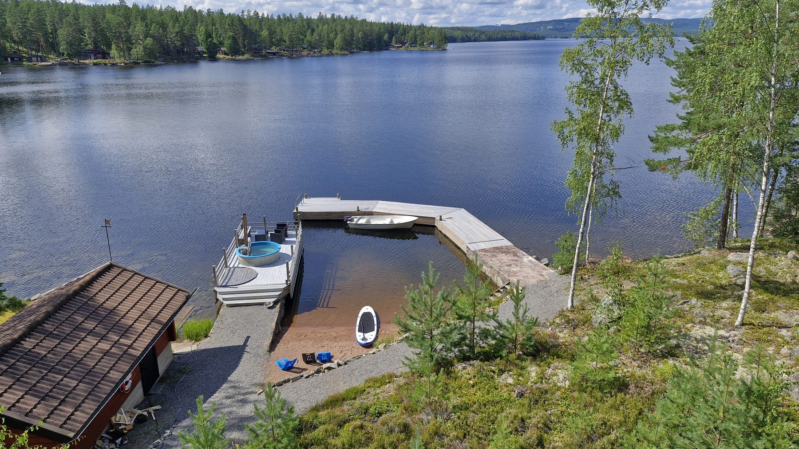
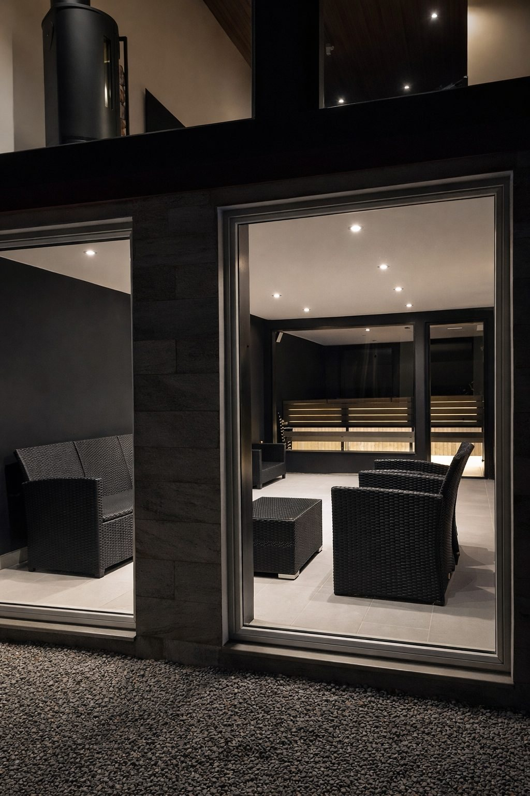
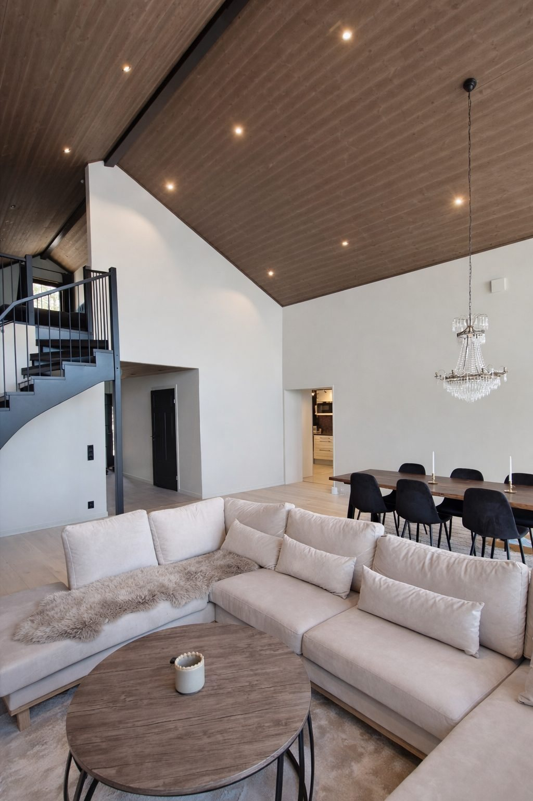

Direkt am See
Nur etwa 25 Meter bis zum privaten Sandstrand, mit Badestelle, Steg und ruhigem Seeblick.
FERIENHAUS SCHWEDEN AM SEE
Ein luxuriöses Architektenhaus direkt am Rogsjön, besonders passend für Gäste aus Deutschland, Österreich und der Schweiz, mit Panoramablick, privatem Sandstrand, Sauna, Boot, SUP und Platz für bis zu 6 Gäste.
URLAUB IN SCHWEDEN
Lake House Dalarna, auch bekannt als Solsidan Dalarna, ist ein Ferienhaus in Schweden für deutschsprachige Gäste, die Ruhe, Natur und Komfort suchen. Viele unserer Gäste reisen aus Deutschland, Österreich und der Schweiz an. Das Haus liegt in Dalarna, etwa 25 Minuten von Falun entfernt, direkt am See mit Wald, Wasser und Abendsonne vor der Tür.
Das neu ausgebaute Haus bietet etwa 200 m² Wohnfläche, drei Schlafbereiche, großzügige Terrassen, große Panoramafenster und eine private Sauna mit Relaxbereich. Es eignet sich besonders für Familien, Paare und Freunde, die ein hochwertiges Ferienhaus am See in Schweden mieten möchten und Dalarna abseits der großen Städte erleben wollen.

Nur etwa 25 Meter bis zum privaten Sandstrand, mit Badestelle, Steg und ruhigem Seeblick.

Private Sauna, Relaxbereich, Kamin und warme Abende mit Blick auf die schwedische Natur.

Skandinavisches Design, hohe Decken, offene Wohnbereiche und Panoramafenster zum See.
DALARNA
Dalarna ist ideal für Urlaub am See, Wandern, Baden, Langlauf, Skifahren und Ausflüge. Von Lake House Dalarna erreichen Sie Falun in etwa 25 Minuten, Bjursås Berg & Sjö in etwa 20 Minuten, Lugnet in etwa 25 Minuten und Leksand Sommarland in etwa 40 Minuten.
BUCHUNG
Neue Gäste können weiterhin bequem über Airbnb buchen. Wiederkehrende Gäste oder Gäste, die direkt anfragen möchten, können über unsere Buchungsseite verfügbare Daten prüfen, eine Preisindikation sehen und eine persönliche Anfrage senden.
Direktanfrage sendenDas Haus passt gut für Familien, Paare und Freunde, die Schweden aktiv erleben möchten, aber abends einen privaten, komfortablen Rückzugsort am Wasser suchen.